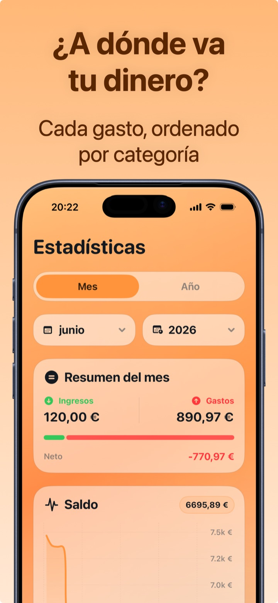

Cómo ahorrar dinero cada mes: 7 movimientos prácticos
Ahorrar no significa vivir de privaciones: significa dejar de pagar por cosas que ni siquiera te das cuenta de que pagas. Estos 7 movimientos funcionan porque atacan las salidas invisibles, no el café de la mañana.
1. Descubre adónde va el dinero (una semana basta)
No puedes recortar lo que no ves. Controla cada gasto durante al menos una semana: en la mayoría de los casos salen enseguida 2-3 partidas que no sabías que pesaban tanto. Es el paso que hace posibles todos los demás.
2. Haz la auditoría de tus suscripciones
Streaming, apps, gimnasio, nube: la mayoría tiene 3-5 suscripciones activas, y casi siempre al menos una ya no se usa. 12,99 € al mes olvidados son 156 € al año. Aquí la guía completa de suscripciones.
3. Págate primero a ti
El día del sueldo, transfiere enseguida una cantidad fija (aunque sean 50 €) a una cuenta separada. El ahorro «con lo que sobra» no funciona: a fin de mes nunca sobra. Automatiza y olvídate.
4. La regla de las 24 horas
Para cada compra no esencial de más de 30-50 €: espera un día. Si al día siguiente aún la quieres, cómprala. La mayoría de las veces el impulso ha pasado — y el carrito abandonado es ahorro puro.
5. Dale un presupuesto a la categoría que se desmadra
No hace falta poner todo a dieta: mira las estadísticas, localiza la categoría fuera de control (a menudo comer fuera o compras online) y pon un límite solo ahí. Un objetivo cada vez aguanta; diez a la vez no.
6. Ojo con los gastos anuales disfrazados
Seguros, impuestos, renovaciones de dominios y apps: llegan una vez al año y revientan el mes. Regístralos como recurrentes anuales para verlos venir, y aparta 1/12 cada mes.
7. Revisa los números cada domingo (2 minutos)
El ahorro es un ciclo de retroalimentación: gastar → medir → corregir. Dos minutos a la semana frente a las estadísticas valen más que cualquier propósito de enero.

Cómo ahorrar cada mes con Crena
- Descarga Crena y controla todo durante una semana: bastan dos segundos por gasto, también desde el widget.
- Introduce tus suscripciones en los Recurrentes: el impacto mensual total aparece enseguida, ya calculado.
- Fija un presupuesto mensual igual a tu gasto medio menos el 10 %.
- Controla en Inicio la media diaria disponible: es el número que mantiene a raya los días de compras.
- Cada domingo, 2 minutos en Estadísticas: encuentra la categoría que se desmadra y corrige la semana siguiente.
Preguntas frecuentes
¿Cuánto debería conseguir ahorrar al mes?
¿Cuál es el gasto invisible más común?
¿Hace falta una app o basta con fuerza de voluntad?
Prueba Crena gratis
Gastos en dos segundos, presupuesto mensual y estadísticas claras. Sin registro y sin vincular la cuenta.
Descargar enApp Store